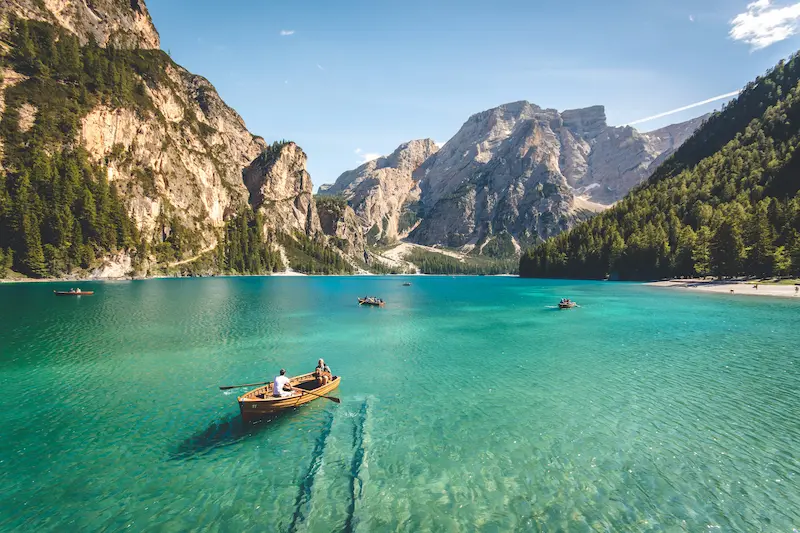

Destaque da Semana

Trilha da Serra Azul
Uma vista panorâmica inesquecível a 1.200m de altitude com mata preservada.
Conectamos você às melhores rotas de caminhada, com informações detalhadas, mapa de dificuldade e grupos guiados.
Explorar Catalógo
Uma vista panorâmica inesquecível a 1.200m de altitude com mata preservada.
24°C
☀️ Ensolarado — Condição ideal para caminhadas
Umidade Relativa: 58%
Vento: 12 km/h SE
Leve no mínimo 2 litros de água por pessoa para caminhadas curtas.
Utilize botas ou tênis com solado aderente e meias de secagem rápida.
Avisar familiares sobre o roteiro e o horário estimado de retorno é fundamental.